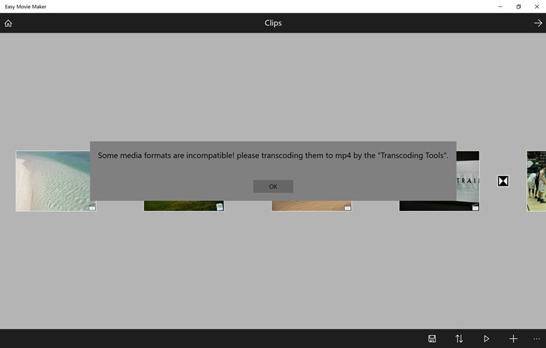
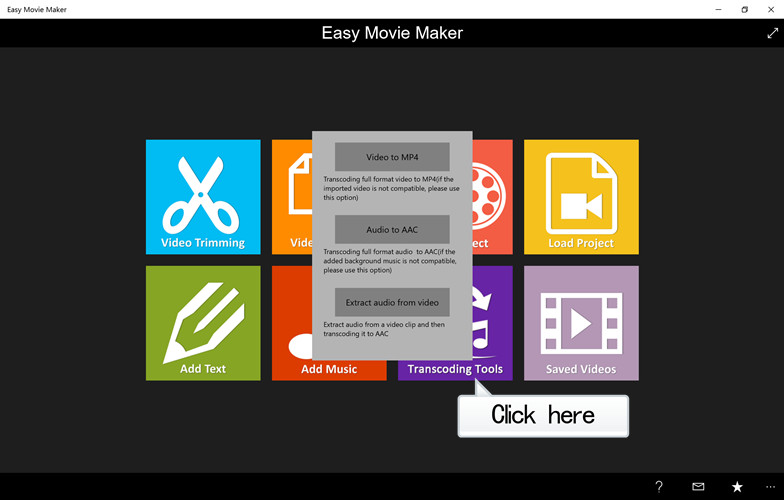

When importing a video or audio, the following error message may pop up.

Because of the limitations of Windows store applications, non-standard format video or audio can not be compatible, so the App providing a convenient transcoding tool for user to transcode video or audio into standard format.
